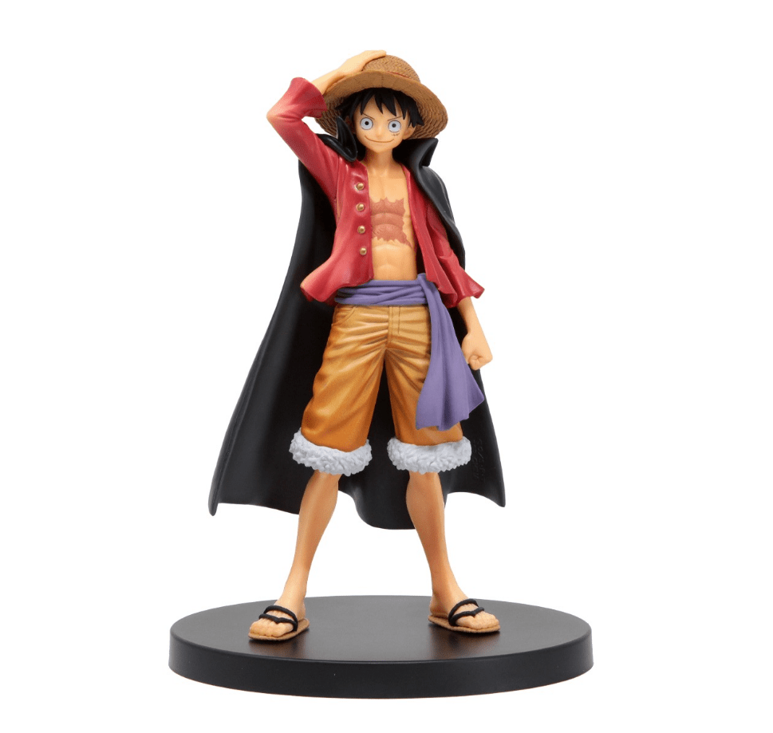

Monkey D. Luffy (モンキー・Ｄ・ルフィ Monkī Dī Rufi?), más conocido como Luffy «Sombrero de Paja» (麦わらのルフィ Mugiwara no Rufi?), es el protagonista principal de la serie de manga y anime One Piece. Es el capitán y fundador de los Piratas de Sombrero de Paja así como un de los Cuatro Emperadores que gobiernan los mares del Nuevo Mundo.[17] Comió una fruta del diablo llamada fruta Gomu Gomu, que le convirtió en un hombre de goma. Además de esto, posee varias habilidades que le hacen ser un pirata más que especial; un gran ejemplo de ello es la capacidad de usar el haoshoku haki ―que sólo lo posee una persona dentro de un millón― y poseer también los otros dos tipos de haki.
$2500